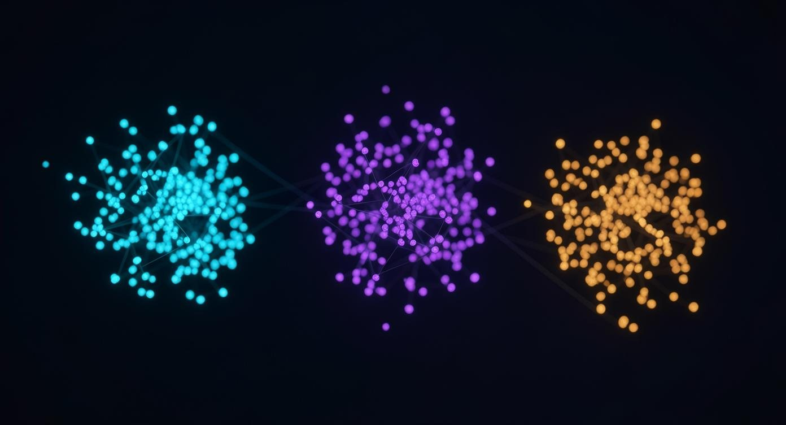
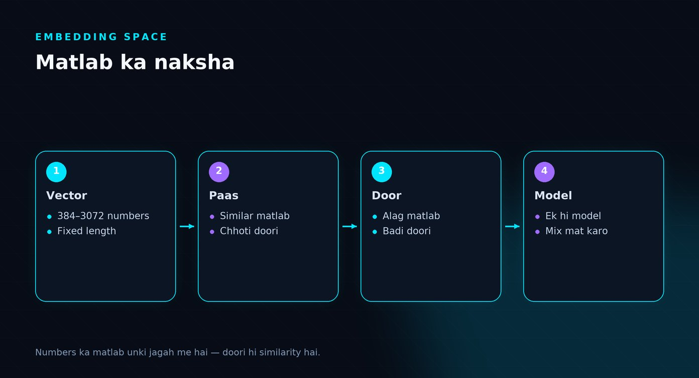
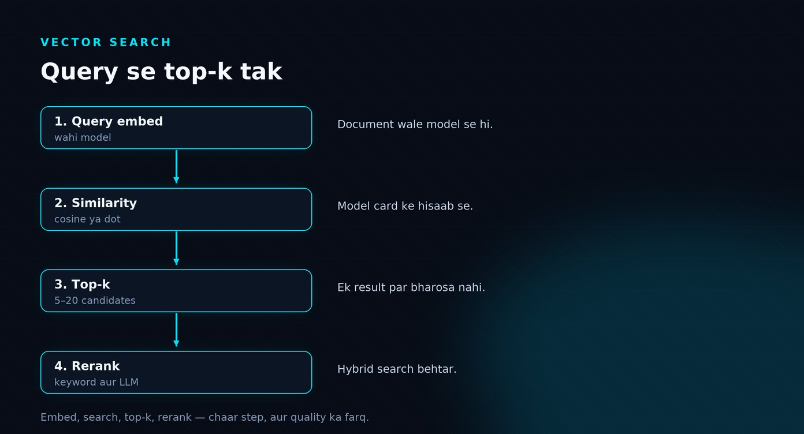

Embeddings Kya Hain? Vector Search Aasan Bhasha Me Guide

Ek customer support portal sochiye jahan 40,000 purane tickets hain. Koi likhta hai “payment cut ho gaya par order confirm nahi hua”. Keyword search “payment” par hazaar tickets dikha dega, jinme se aadhe refund ke hain, aadhe gateway error ke. Insaan turant samajh jata hai ki is sawaal ka matlab “paisa kata aur order nahi bana” hai. Computer ko yeh “matlab” samjhana hi embeddings ka kaam hai — shabd ko aise numbers me badalna ki milte-julte matlab wale text paas aa jayein.
Is guide me main bilkul shuru se chalunga: embedding kya hoti hai, text se vector kaise banta hai, similarity kaise napte hain, vector database kab zaroori hai aur kab nahi, chunking aur hybrid search ke practical faisle, aur woh teen galtiyan jo har naye RAG project me hoti hain. Aakhir me ek chhota sa code example bhi hai.
Chhota jawab: Embedding ek numbers ki list (vector) hai jo kisi text, image ya audio ka matlab represent karti hai. Milte-julte matlab wale text ke vectors ek doosre ke paas hote hain, isliye “sabse milta-julta” content dhoondhna distance naapne ka kaam ban jata hai. Vector search yahi karta hai — query ka vector banata hai aur sabse paas wale vectors laata hai.
Embedding kya hoti hai
Embedding ek fixed-length list hai — 384, 768, 1536 ya 3072 numbers. Har number kisi “dimension” ka value hai. Insaan ke liye in numbers ka koi seedha matlab nahi hota; “teesra number 0.42 hai” ka koi arth nahi. Matlab poore vector ke position me hota hai — jaise nakshatra mandal me sitara ka naam nahi, uski jagah matlab rakhti hai.
Sabse mazedaar baat — in spaces me direction ka matlab hota hai. Mashhoor example: king - man + woman ≈ queen. Yeh perfect nahi hota, par dikhata hai ki model ne sirf shabd yaad nahi kiye, rishte bhi pakde. Aaj ke embedding model isse kaafi behtar hain aur poore sentence ka matlab pakadte hain, sirf ek shabd ka nahi.
Ek zaroori baat: embedding “sach” nahi batati, sirf similarity batati hai. “Best laptop under 50k” aur “worst laptop under 50k” ke vectors kaafi paas ho sakte hain, kyunki words same hain. Isliye sensitive kaam me sirf vector search par bharosa nahi karte — aage reranking ya LLM se check karate hain.

Text se vector kaise banta hai
Pehle text ko tokenizer tokens me todta hai, phir ek trained model (BERT family, E5, BGE, OpenAI ke embedding model, ya koi open model) har token ka vector banata hai, aur aakhir me sabko milakar ek vector deta hai. “Milane” ka tarika model ke design par depend karta hai — average, CLS token, ya attention pooling.
Yahan ek cheez samajhna zaroori hai: embedding model aur chat model alag hote hain. GPT ya Claude se embedding nahi nikalte; uske liye alag, sasta model hota hai. Embedding model ka kaam sirf represent karna hai, generate karna nahi. Isliye woh chhota, tez aur bahut sasta hota hai — crore documents embed karna economically possible ho jata hai.
Ek aur baat — model ke saath uska dimension fixed hota hai. 768-dimension model se 1536-dimension vector nahi mil sakta, aur do alag model ke vectors aapas me compare nahi kiye ja sakte. Yeh chhoti si baat production me bahut baar galti banati hai: purane index ko naye model se mix kar diya jata hai aur similarity bekaar ho jati hai.
Similarity kaise napte hain
Teen tarike aam hain. Cosine similarity do vectors ke beech ka angle naapti hai — direction dekhti hai, length nahi. Yeh text ke liye sabse common hai, kyunki lamba text automatically bada vector nahi banata. Dot product angle aur length dono dekhta hai; kai model isi par train hote hain, isliye wahi use karna chahiye. Euclidean distance seedhi doori naapti hai — normalized vectors par yeh cosine ke barabar hota hai.
Practical niyam: jo metric model card par likha ho, wahi use karo. Aksar log cosine lagate hain jab model dot product ke liye train hua tha, aur quality thodi gir jati hai — itni ki pata bhi nahi chalta, bas results “thode ajeeb” lagte hain.
Similarity score ko percentage ki tarah mat samjho. 0.82 ka matlab “82% match” nahi hota. Score ka matlab sirf relative hota hai — is query ke liye 0.82 sabse achha hai, par doosri query par 0.72 bhi sabse achha ho sakta hai. Isliye ek fixed threshold lagana khatarnak hai; better hai top-k laana aur aage rerank karna.

Vector search kaise chalti hai
Sabse simple tarika brute force hai: query ka vector banao, aur har stored vector se similarity naapo. 10,000 documents par yeh milliseconds me ho jata hai aur koi database nahi chahiye — bas ek numpy array. 10 lakh par yeh slow ho jata hai, aur yahin approximate nearest neighbour (ANN) algorithms aate hain.
Sabse popular hai HNSW — ek graph jisme har vector apne nazdeeki padosiyon se juda hota hai. Search thodi “kudne” wali hoti hai: graph me aage badhte hue paas-paas jate hain, isliye har vector check nahi karna padta. Iske badle thodi si accuracy chhodni padti hai — isliye ise approximate kaha jata hai. Iske alawa IVF (clusters me baantna) aur product quantization (vectors ko compress karna) aam hain.
Ek practical trade-off: HNSW ka index memory me rehta hai, isliye 10 lakh 1536-dimension vectors par kuch GB RAM lag sakti hai. Product quantization se memory 4–8 guna kam ho jati hai, par recall thoda girta hai. Shuruaat me simple rakhein — 1 lakh se kam documents par brute force hi kaafi hai.
Vector database kab chahiye
Yeh sawaal bahut paisa bachata hai. Agar aapke paas 5,000 chunks hain aur woh ek script me load ho jate hain, to aapko vector database ki zaroorat nahi — numpy file ya SQLite extension kaafi hai. Vector database tab chahiye jab: data lakhon me ho, multi-user filtering chahiye, updates roz ho rahe hon, ya uptime aur backup ki zaroorat ho.
Do raste hain. Dedicated vector database (Pinecone, Weaviate, Qdrant, Milvus) — filtering aur scale ke liye bane hue. Ya phir jo database aap already chalate hain usme vector support (Postgres ka pgvector, Mongo Atlas, Redis) — kam naya infrastructure, aur aapke existing backup, permission aur monitoring ka fayda. Chhoti team ke liye doosra raasta aksar behtar hota hai.
Ek cheez zaroor dekhein — metadata filtering. Real duniya me “sirf is customer ke documents” ya “sirf 2025 ke baad ke” chahiye hota hai. Bahut se log vector search ko filter ke saath jodna bhool jate hain aur baad me poora index dobara banate hain. Shuru se hi metadata (source, date, owner, category) ke saath store karein.
Chunking: sabse zyada asar dalne wala faisla
Embedding poore document ki nahi, chunk ki banti hai. Chunk bahut bada ho to embedding “dhundhla” ho jata hai — ek 3,000 shabd ke chunk me kai topic hote hain aur similarity kam ho jati hai. Bahut chhota ho to context toot jata hai — “usne kaha ki woh aayega” me “woh” kaun, pata nahi chalta.
Practical shuruaat: 300–800 tokens ka chunk, 10–20% overlap, aur heading ke saath. Overlap se sentence beech me nahi tootta. Aur har chunk me document ka title ya section heading zaroor rakhein — isse embedding ko context milta hai aur retrieval kaafi behtar hota hai. Table aur list ko todna mat; unhe alag chunk rakhein.
Ek chhota code example
Yeh example dikhata hai ki concept kitna simple hai — asli production me model, storage aur error handling alag honge.
from sentence_transformers import SentenceTransformer
import numpy as np
model = SentenceTransformer("intfloat/multilingual-e5-small")
docs = ["Refund 7 din me aata hai", "Payment fail hone par retry karein", "Delivery 3–5 din me"]
doc_vecs = model.encode(docs, normalize_embeddings=True)
q = model.encode("paisa kab tak wapas milega", normalize_embeddings=True)
scores = doc_vecs @ q # normalized hai, isliye dot = cosine
best = np.argsort(scores)[::-1][:2]
print([(docs[i], round(float(scores[i]), 3)) for i in best])Yahan teen cheezein note karein. Normalize kiya, isliye dot product cosine ke barabar hai. Multilingual model liya, kyunki Hinglish aur English dono query aayengi — yeh India ke liye bahut practical point hai. Aur top-2 liya, kyunki ek hi result par bharosa karna risky hai.
Teen galtiyan jo har project me hoti hain
1. Sirf vector search par bharosa. Exact match wale sawaal — order ID, error code, product SKU — par vector search kamzor hoti hai. “Error E1024” ka embedding “E1025” ke paas hoga. Isliye hybrid search karein: keyword (BM25) + vector, phir scores mila kar rerank.
2. Query aur document ka farq na samajhna. Kai model (jaise E5) expect karte hain ki query par “query:” aur document par “passage:” prefix lage. Bina prefix ke quality gir jati hai. Model card padhna zaroori hai, yeh guess karne ki cheez nahi.
3. Sirf accuracy dekhna. Retrieval ka asli sawaal hai — “jo chunk chahiye tha, woh top-5 me aaya ya nahi” (recall@k). Iske liye 30–50 sawaalon ka ek chhota test set banayein, jisme pata ho kaun sa chunk sahi jawab deta hai. Bina iske aap andhere me tuning karte rahenge.
Ek chauthi cheez bhi — purana index. Jab document update ho, uska chunk aur embedding dobara banao, warna search purana jawab dega. Version number metadata me rakhein taaki pata chale kaun sa index kab bana.
Mera anubhav
Ek internal HR policy bot par kaam karte waqt humne 1,200 page ka policy document 500-token chunks me toda. Bot theek jawab de raha tha, par “kitne din ka maternity leave” par galat answer aa raha tha — do states ke alag rules ek hi chunk me the. Maine chunk size badhaya, phir aur kharab hua.
Asli samadhan chunk size nahi tha — structure tha. Humne har section ko uske heading ke saath chunk kiya aur table ko alag rakha, aur har chunk me state ka naam metadata me daala. Uske baad wahi model, wahi index, jawab sahi aane lage. Seekh: embedding se pehle document ka structure saaf karo; chunking ka faisla content ke shape se hota hai, kisi fixed number se nahi.
Doosri sikh — multilingual model ka farq. Jab humne English-only model se Hinglish queries test ki, recall 40% gir gaya. Chhota multilingual model 3 guna sasta tha aur behtar kaam kar raha tha. Apni asli queries par test karein, benchmark par nahi.
Nateeja
Embedding text ka matlab numbers me badal deti hai, aur milte matlab wale text paas aa jate hain. Similarity cosine, dot product ya Euclidean se napte hain — model card ke hisaab se. Vector search ANN se tez hoti hai, vector database lakhon documents aur filtering par zaroori hota hai, aur chunking ka faisla quality par sabse zyada asar dalta hai.
Shuruat ka seedha raasta: ek multilingual embedding model, normalized vectors, ek numpy file ya pgvector, 300–800 token chunks heading ke saath, aur 40 sawaalon ka test set. Isse aap 80% quality paa lenge bina naya infrastructure khade kiye.
Aage padhein: transformer aur attention — jahan yeh vectors bante hain; RAG vs fine-tuning — retrieval kab kaafi hai aur kab nahi; aur LLM hallucination — retrieval ke baad bhi jawab galat kyun ho jata hai.
अक्सर पूछे जाने वाले सवाल
Embedding aur one-hot encoding me farq kya hai?
One-hot har shabd ko alag, bada aur sparse vector deta hai — koi similarity nahi. Embedding chhota, dense vector deta hai jisme matlab ka rishta hota hai.
Kya embeddings images ke liye bhi hote hain?
Haan. CLIP jaisے model image aur text ko ek hi space me le aate hain, isliye text se image search ho jati hai.
Kitne dimension behtar hain?
Bada dimension zyada detail par mehnga aur slow. 384–1024 chhoti team ke liye kaafi hai; benchmark apne data par karein.
Kya vector database zaroori hai?
Nahi. Ek lakh se kam documents par numpy, FAISS ya pgvector kaafi hai. Lakhon aur multi-user filtering par dedicated database socho.
Similarity score 0.9 ka matlab kya hai?
Sirf “is query ke liye kaafi paas” — percentage nahi. Score ko threshold ki tarah mat use karein, top-k aur rerank behtar hai.